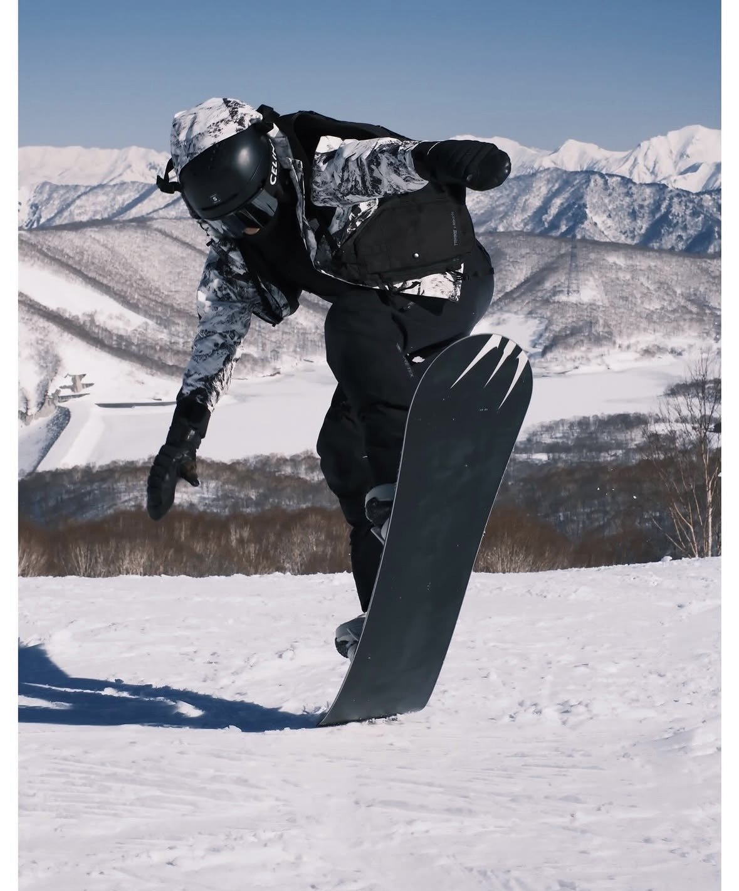
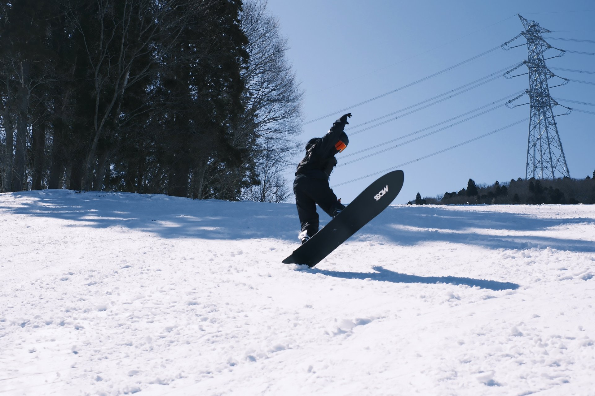
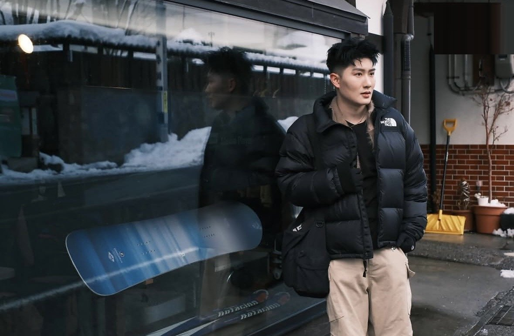
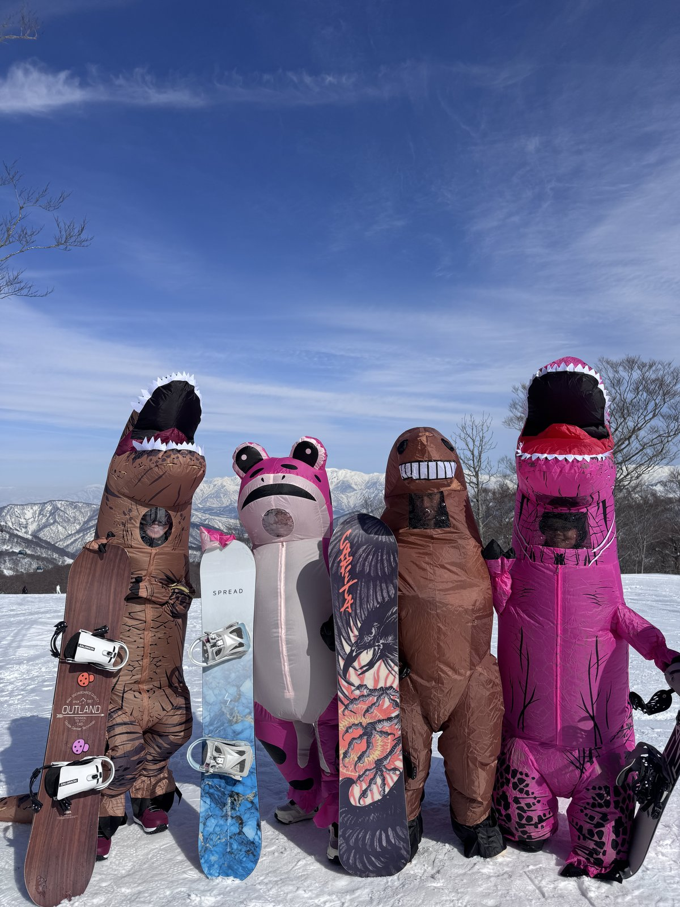

很多人第一次在雪場被拍照，都會不自覺僵硬、不知道手腳該放哪裡。其實滑雪拍照最好看的瞬間，往往不是「擺出來」的，而是熟悉幾個基本姿勢與時機後，自然做出來的動作。以下整理 10 個實用技巧，從站姿到互動一次看。

1. 基本站姿：膝蓋微彎、重心放低
雙板或單板站立時，膝蓋微彎、重心稍微向下沉，比直挺挺站著更有力量感，畫面也會顯得穩定。避免雙腳完全打直，那會讓身形看起來緊繃、不自然。
2. 視線看向鏡頭以外的地方
與其死盯鏡頭，不如把視線放在遠方的雪山稜線或滑行方向。這種「看向前方」的姿勢在滑雪照片裡特別耐看，也比較符合滑雪當下真實的樣子。

3. 起跳瞬間：抓板或伸展手臂
如果你會做小跳躍，起跳的最高點是拍攝的黃金時機。這時可以嘗試抓板（Grab）或是把手臂自然張開，讓身體線條在畫面裡更完整。
4. 讓雪花成為畫面的一部分
急停甩雪、轉彎揚起的雪花，都是很吸引人的畫面元素。拍攝前可以先跟攝影師確認拍攝角度，讓雪花噴濺的方向剛好對著鏡頭。

5. 動態走路比站定更自然
與其站在原地擺拍，不如請攝影師拍你正在走動、整理裝備或跟同伴聊天的瞬間。這類「被抓拍」的畫面通常比刻意擺姿勢更有真實感。
6. 利用手邊的裝備入鏡
雪板、雪杖、護目鏡都是很好的道具。單手扛板走在雪地上，或是把護目鏡輕輕拉到額頭上，都是自然又好看的小動作。

7. 多人拍攝：製造互動而不是排排站
朋友或家人一起拍攝時，與其排成一列面對鏡頭，不如互相擊掌、搭肩，或是一起望向同一個方向。有互動的畫面會比制式合照更有溫度。
8. 表情放鬆，笑不出來就深呼吸
低溫環境下常常會不自覺表情僵硬。拍攝前深呼吸、抖動一下肩膀放鬆身體，會比硬擠笑容更自然。
9. 挑對背景：留白比塞滿更耐看
純白雪地、單一色調的樹林、或是雪場建築的簡單線條，都是很好的背景。盡量避免背景太雜亂（例如多個雪道標示、人群聚集處），讓主角自然被突顯出來。
10. 光線：順光好辨識，側光更有層次
正中午順光拍攝時，臉部與裝備細節最清楚；如果想要更有氛圍感的畫面，可以選在上午或下午側光的時段，讓雪地與人物產生更明顯的光影層次。
拍攝前的簡單準備清單
- 確認護目鏡 / 太陽眼鏡是否會反光遮住眼神
- 拍攝前抖動放鬆肩頸與臉部肌肉
- 跟攝影師簡單溝通想要的風格（動作為主 / 生活紀錄為主）
- 預留幾次重來的時間，第一次通常不是最自然的一次
如果你也想在日本滑雪旅行中留下自然又有質感的回憶，歡迎查看湯澤滑雪攝影方案與可預約檔期。
查看預約方案 →